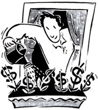

BOOTSTRAPS
Home-business expert Marc Esenson offers a dozen bps on starting a small home enterprise.
Once upon a time, hard work, dedication to the company, and/or a strong union guaranteed your job for life. Today, it's far more prudent to assume that sooner or later, you and your job will part company (if you haven't already).
When that occurs, will you feel victimized, depressed, and desperate? Or will you be ready to seize the opportunity for a great new beginning? Your choice. It is my firm belief-and long-term experience - that developing and maintaining a teeny, tiny business of your own, what I call an Ace in the Hole, is the best investment you can make for your future.
You don't need to burn any bridges, mortgage the farm, quit your job, hire attorneys and accountants - or even necessarily invent a better mousetrap. You just need to pick a reasonable path, take a few well-calculated, very low-risk steps, and let your Ace grow slowly. Along the way, you'll get two bonuses: extra income and more tax deductions.
So why isn't there a business booming on every kitchen table? Despite America's reputation as The Land of Opportunity, you probably believe that starting a business is costly, risky, and regulated, and that you'd be nuts to try. Nonsense! Allow me to demystify the process:
Begin by simply giving the possibility of creating an Ace in the Hole some serious consideration. My friend Al Lococo always dreamed of retiring into his own business and gave the notion a lot of thought. Eventually, Al came to believe that he really could be his own boss. So, about 18 months ago, he decided to retain his job but moonlight in a small computer business. Al filed his chosen business name at the county courthouse, opened a business checking account, registered with the state sales tax people, and converted one room of his house into a workshop/office. His total investment was "pocket change," but Al's Ace was in place, and public.
Your journey to entrepreneurial glory can't begin until you have a product or service that people will happily pay you to provide. Do you already know what your Ace will be? Great. But don't rush to place a full-page ad in the newspaper just yet. If inspiration hasn't struck, there are lots of ways to find it. For example, skim through the yellow pages, scan the classified ads in newspapers, walk down Main Street - or through a mall. Pay attention to how others are making a living on their own, and tune in whenever you hear, "I wish there were someone I could call to ...." Then, make a list of things you know how to do. Really! Be serious, be silly, be creative - but fill up at least a page.
Put a star next to a few things on your list that you'd enjoy doing. Then pick one to try. Although Al could have easily parlayed his love of old cars, for example, into a perfectly reasonable business, he wisely decided to build on his love of computers.
While there's a benefit to doing something better, cheaper, faster, or with a dazzlingly brilliant twist, the only requirement is that you serve a real need at a fair price. Reinventing the wheel is not necessary.
Talk to everyone you know about your idea - but don't take everything you hear to heart. You'll get good advice, helpful insights, and a hefty dose of discouragement. Still, great ideas lurk in strange places, and disclose themselves when least expected. Al initially decided to transfer his computer expertise into a desktop publishing business, which he named "Viable Visuals." But, because he was flexible, and open to opportunity, Al soon found a more appropriate niche. He happened to mention his new business venture to his doctor. During a physical, the two men were chatting about computers and the doctor said, "I'd like to hire someone to make monthly backups of the data on my computer's hard drive and to check my PC for viruses." By the time Al's pants were back on, he'd found a great service he could provide to local doctors ...and other small businesses, including mine. He also received a clean bill of health and acquired his first paying customer.
Set your sights on developing a modest "backup" source of income - not on creating a new corporate empire. Micro-mini businesses expose you to micro-mini risks. Since Al enjoyed and could keep his fulltime job, he was in an ideal position to start small, while he slowly and steadily nurtured and focused his business. Then, when Al was offered a generous, early retirement package, after 28 years on the job, he was ready. Now he's working at his Ace full time and loving it.
Take your time picking out a name and logo. I believe that Al's "Viable Visuals" moniker might have worked for desktop publishing, but it doesn't come close to describing the computer backups, upgrades, trouble shooting, and virus protection service Al's actually providing. The last handicap any business needs is a "bad" name.
The nice thing about a tiny business is the ease with which you can change direction, purpose, or speed. So don't hold on to an idea that turns out not to work. Try another. Eventually, one idea will be right for you. Al thought desktop publishing would be his ticket to a smooth passage from the corporate world to his dream of self-employment. Fortunately, he wasn't afraid to alter his course.
If you keep at it, regularly putting in time and energy, you'll find an Ace that will make you money, give you tax breaks, and protect you from the vagaries of our economy.
You, and what you produce, should look great. That doesn't mean you need a glossy brochure, a Tinsel-Town video, or a $1,000 outfit. But do avoid chewing gum or blowing smoke in the face of a potential client, especially one who's trying to decipher the estimate you've scrawled on the back of a mud-soaked envelope.
Mistakes are costly - and leave everyone wondering what else you might have done wrong. Can you be trusted in the future?
Customers appreciate speedy service. When you have a problem, say, a deadline that can't be met, give your customers the scoop right away. Say you're sorry with a discount - or a free gift. In fact, throw in extras even when you don't screw up.
10. Be accessible, very accessible - to both existing customers and potential new ones. And remember, it's not just customers who count. Win the respect of suppliers and you'll get faster deliveries, plus valuable referrals. While no one drops everything to answer a letter or speak to every caller, do reply promptly. Remember how you felt when last you paced, waiting to hear from a doctor, lawyer, or mechanic? Take every caller's questions seriously. Back in 1989, Al took a call from a woman with an amazing number of questions about his loan software. Later, he found out that she was working on an assignment for a large computer magazine. Al's technical support helped him secure a great review when he really needed it.
11. Zero in on the special needs of those accounts you already have.
Sure, keep trying to attract newcomers, but take this old cliche seriously: 80% of your business should come from 20% of your customers. Treat every one of your clients like a VIP.
12. One last thought.
New adventures add to the excitement of life and keep us from growing stale. Starting your own business can be wonderfully exhilarating, especially if you believe that it's not whether you "make it big" that matters, but whether you make it fun, or meaningful.
The conventional wisdom starts with the old saw that most small businesses fail because they're "undercapitalized." Hogwash. Begin small arid part time, then grow slowly, and you won't have to put the touch on friends and family - or plead your case to banks or venture capitalists. In truth, if you start small enough, the only thing you'll have to fear is success. You won't have to get bogged down in plans - be they marketing, business, financing, operating, decorating, or floor plans. You won't need to spend a lot of time or money on: advertising, employees, insurance, stationery, business cards, logos, lawyers, bookkeeping, contracts, office space, or phone systems, to name but a few. If and when you need a little help, there will be someone with an Ace, ready to handle every dreaded detail.
No need to try to keep your eyes from glazing over as you read boring tomes on accounting for the small business, market research, or capital formation. For down-to-earth advice on Ace building, there is one book I heartily recommend: Homemade Money , by Barbara Brabec (Better Way Publications, 1992). You also don't need to worry about finding the perfect location. In this age of faxes, modems, and toll-free numbers, most businesses can be started - then successfully operated - right from your home. Don't worry, wonder !
Where will your Ace lead? Will it be all you're dreamed about - or more? Will you decide to stick it out in the 9 to 5 rat race, or head out on your own? Time will tell.
For a sample of Marc Eisenson's newsletter; send $1 plus an SASE to Box 78, Elizaville NY 12523 .
|
 |
|
|